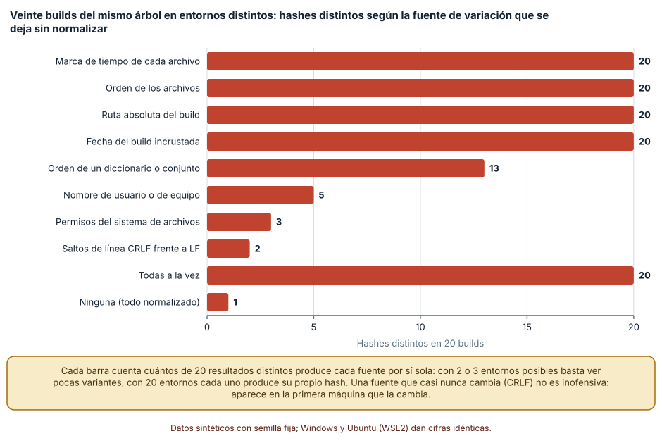
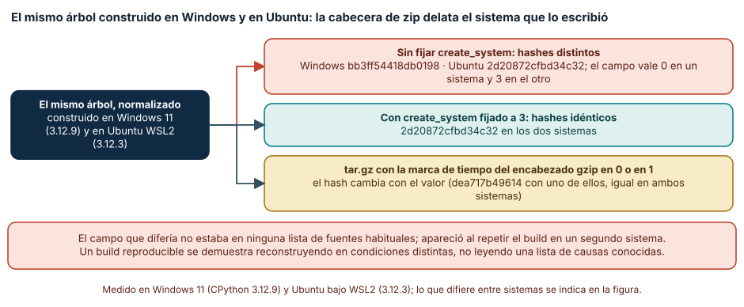
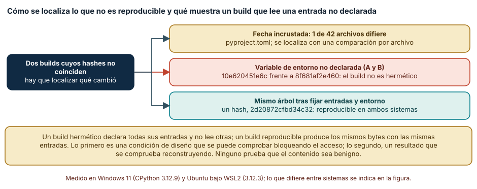

← SE-468 — Proyecto: producto con seguridad verificable · ↑ Parte 39 · 📚 Índice completo · 🌐 Portal · SE-470 — Artefactos, repositorios y promoción →
Punto profesional y fundamento pedagógico
Punto profesional. La clase existe para que puedas responder, con evidencia y no con una promesa, a la pregunta «¿este binario sale de este código?». Construir significa transformar fuentes en un artefacto; un build es reproducible cuando las mismas entradas producen los mismos bytes y es hermético cuando solo puede leer las entradas que declaró. Sin esas dos propiedades, nadie puede comprobar que lo que se distribuye es lo que se revisó, y toda verificación posterior (firmas, procedencia, SBOM) se apoya en un artefacto que nadie puede reconstruir.
Por qué aparece aquí. Abre la Parte 39 después de la Parte 38 (seguridad, privacidad y cumplimiento): allí se decidió qué amenazas importan; aquí empieza la cadena que lleva el código hasta quien lo usa, y el primer eslabón es el build. Sigue a la Parte 36 en un punto concreto: allí se aprendió que una medición debe poder repetirse; aquí se aplica la misma exigencia al propio artefacto. El caso conductor es la API de entregas de la plataforma educativa, ahora empaquetada como un archivo que se publicará.
Error conceptual que debe corregir. Creer que «reproducible» significa «el CI lo construye siempre igual» o que basta con ejecutar el build en un contenedor. Un contenedor fija el sistema de archivos pero no la hora, el orden de los archivos, la ruta absoluta ni lo que la herramienta escribe en las cabeceras del archivo. Un build es reproducible solo si alguien ajeno, en otra máquina, obtiene los mismos bytes.
Secuencia de aprendizaje. Antes de medir, predices cuántos de veinte builds del mismo árbol darán el mismo hash si dejas sin normalizar solo la marca de tiempo de los archivos; después aíslas ocho fuentes de variación una por una, repites el build en Windows y en Ubuntu, localizas qué archivo difiere y conviertes una entrada no declarada en una declarada. La secuencia usa predicción, contraste entre sistemas y localización de la causa.
Evidencia de aprendizaje. reproducible-log.md con la predicción, las tres figuras reproducidas, el script de build normalizado, el hash obtenido en dos sistemas y una lista de entradas declaradas del build de la API de entregas, con la que otra persona pueda reconstruir el artefacto y comparar la huella.
Límite de la conclusión. El «build» es un empaquetado en un archivo zip de un árbol sintético de 42 archivos de código Python; no hay compilador, enlazador ni dependencias descargadas. Eso aísla los mecanismos de la clase y deja fuera lo más difícil de un build real (compiladores que incrustan rutas y fechas, optimizaciones no deterministas, generación de código). No se probó macOS ni otras versiones de Python.
Trazabilidad fuente → afirmación
| Fuente primaria u oficial | Afirmación que respalda | Lo que no prueba |
|---|---|---|
| Reproducible Builds: definición | Define un build reproducible como el que, dadas las mismas fuentes, el mismo entorno de construcción y las mismas instrucciones, produce artefactos idénticos bit a bit. | No dice qué fuentes de variación tiene tu herramienta ni garantiza que el contenido sea benigno. |
| Reproducible Builds: SOURCE_DATE_EPOCH | Describe una variable de entorno con la que el build toma la fecha de una marca de tiempo fija en lugar de la hora actual. | No cubre los archivos que la herramienta no consulta esa variable al escribirlos. |
| Lamb y Zacchiroli, «Reproducible Builds: Increasing the Integrity of Software Supply Chains» (IEEE Software, 2022) | Presenta las motivaciones, las técnicas y la experiencia de proyectos como Debian para volver reproducibles los paquetes y detectar compromisos del proceso de build. | No mide ningún proyecto de este curso. |
| Thompson, «Reflections on trusting trust» (CACM, 1984) | Muestra que un compilador comprometido puede insertar un defecto en el binario sin que aparezca en ninguna fuente, lo que motiva comparar construcciones independientes. | No describe los compiladores actuales ni cuantifica el riesgo. |
| Python: módulo zipfile | Documenta los campos de cada entrada (fecha, atributos externos, sistema de creación) que se escriben en el archivo. | No enumera qué campos varían entre sistemas; eso lo mide la figura de la clase. |
Antes de empezar
Recupera lo aprendido en la Parte 36: una medición sin protocolo repetible no es evidencia, y en SE-444 los artefactos de un paquete de informe se compararon entre Windows y Ubuntu. La pregunta activa es: ¿qué debo fijar para que otra persona obtenga exactamente los mismos bytes y cómo me entero de lo que olvidé fijar?
Prerrequisitos
- Haber completado
SE-444o poder explicar por qué un resultado debe poder repetirse desde un checkout limpio. - Python 3.11 o posterior; los experimentos usan solo la biblioteca estándar (
hashlib,zipfile,tarfile,gzip,random). - Saber qué es una función hash y por qué un solo bit distinto cambia el resultado completo.
Problema auténtico
El equipo de la plataforma publica un paquete de la API de entregas. Un revisor externo reconstruye el release 1.4.0 a partir del código etiquetado, compara el archivo con el publicado y obtiene un hash distinto. Nadie sabe si el release fue alterado, si el CI usó una dependencia diferente o si, simplemente, cada build incrusta la hora. Mientras no pueda responderse, el equipo no puede ni demostrar que el artefacto es el esperado ni descartar que un tercero lo haya manipulado.
El problema real es de información: sin builds reproducibles, la diferencia entre «distinto porque cambió algo» y «distinto porque cambió la hora» es indecidible, y toda alarma se convierte en ruido o en costumbre de ignorarla.
Objetivos observables
Al terminar podrás:
- distinguir un build reproducible de uno hermético y decir qué demuestra cada propiedad;
- enumerar las fuentes de variación de un empaquetado (tiempo, orden, rutas, permisos, saltos de línea, usuario, estructuras sin orden) y neutralizar cada una;
- repetir un build en dos sistemas y localizar con una comparación por archivo qué entrada difiere;
- declarar las entradas de un build y detectar una lectura no declarada;
- decidir qué evidencia permite afirmar «reproducible» y en qué condiciones esa afirmación deja de valer.
Mapa conceptual
Ver la notación fuente del diagrama
flowchart LR
A[Fuentes revisadas] --> B[Build: transforma entradas declaradas]
C[Entorno: herramientas, variables, hora, ruta] -->|si se filtra| B
B --> D[Artefacto y huella]
D --> E{Otra persona, otro sistema: misma huella?}
E -->|sí| F[Reproducible: se puede verificar]
E -->|no| G[Comparar por archivo y localizar la entrada que difiere]
G --> H[Declarar o neutralizar la entrada]
H --> BEl mapa muestra un bucle: la reproducibilidad se descubre fallando. El entorno entra por canales que nadie declaró, y la comparación entre construcciones es la herramienta que los hace visibles.
Temas y por qué importan
| Tema | Por qué cambia una decisión profesional | Evidencia mínima |
|---|---|---|
| Qué es reproducible y qué hermético | Confundirlos lleva a creer que un contenedor basta. | Predicción, traza causal y contraejemplo de Reproducible y hermético en reproducible-log.md |
| Tiempo, orden y metadatos | Son la causa más frecuente de hashes distintos. | Predicción, traza causal y contraejemplo de Fuentes de variación en reproducible-log.md |
| Rutas, usuario y entorno | Se filtran al artefacto sin que el autor lo sepa. | Predicción, traza causal y contraejemplo de Entorno que se filtra en reproducible-log.md |
| Diferencias entre sistemas | Un build que solo se prueba en una máquina no se ha probado. | Predicción, traza causal y contraejemplo de Dos sistemas en reproducible-log.md |
| Localizar la diferencia | Sin comparación por archivo, un hash distinto no informa. | Predicción, traza causal y contraejemplo de Localizar en reproducible-log.md |
Conceptos y decisiones
1. Reproducible y hermético
Un build es reproducible si dos ejecuciones con las mismas entradas producen el mismo resultado bit a bit. Es hermético si solo puede leer las entradas que declaró: el código fuente, las dependencias fijadas por huella y las herramientas en versiones concretas, sin acceso a la red, a variables de entorno arbitrarias ni a archivos del sistema que nadie listó. Son propiedades distintas. Un build puede ser reproducible por casualidad y no hermético (hoy lee una variable que casi nunca cambia) y puede ser hermético y no reproducible (declara todo pero escribe la hora en la cabecera). La hermeticidad es una condición de diseño que se hace cumplir bloqueando el acceso; la reproducibilidad es un resultado que se comprueba reconstruyendo. Una sin la otra no sirve para verificar: un build hermético y no reproducible es auditable pero no comparable, y uno reproducible y no hermético es comparable hasta que cambia la entrada oculta.
2. Tiempo, orden y metadatos
Las fuentes de variación más habituales son metadatos que el formato guarda sin que el programador lo pida. La marca de tiempo de cada archivo (la hora a la que se creó o se copió) cambia en cada build. El orden en que se listan los archivos depende del sistema de archivos y de la herramienta: algunos devuelven los nombres en orden de creación, otros alfabético, otros sin orden definido. Los permisos y el propietario varían con la máscara de creación (umask) y con el usuario. Las estructuras sin orden (un diccionario o un conjunto serializados tal cual) pueden salir en otro orden. Los saltos de línea de una fuente cambian si un sistema de control de versiones convierte LF en CRLF al extraer. La corrección general es normalizar: fijar una fecha constante (la convención es SOURCE_DATE_EPOCH, que toma la fecha del último commit), ordenar los nombres, fijar modo y propietario de cada entrada y ordenar las estructuras antes de serializarlas.
3. Entorno que se filtra
El segundo grupo de fuentes es información del entorno que el build incrusta: la ruta absoluta del directorio de trabajo (aparece en símbolos de depuración, en rutas de módulos compilados), la fecha del build en una cadena de versión, el nombre del usuario o del equipo en un comentario o un metadato, la versión del compilador si no se fijó. Ninguna aparece en el código fuente: las introduce la herramienta. Se neutralizan eliminándolas, derivándolas de la fuente (el hash del commit en lugar de la fecha) o fijando el entorno (ruta de construcción constante, por ejemplo en un contenedor). Una entrada oculta especialmente traicionera es una variable de entorno que el build lee con un valor por omisión: funciona en la máquina del autor, produce otra cosa donde la variable es distinta y nadie la listó como entrada.
4. Dos sistemas
Repetir el build en una máquina idéntica a la primera solo prueba que no hay azar; repetirlo en un sistema distinto prueba que no hay dependencia del entorno. En esta clase el mismo árbol, normalizado en marcas de tiempo, orden y permisos, produjo un hash en Windows y otro en Ubuntu. La causa no estaba en la lista habitual: el formato zip guarda en cada entrada el sistema que la creó (un campo create_system que vale 0 en un sistema y 3 en el otro) y la biblioteca lo rellena con el valor del sistema donde corre. Es una cabecera que nadie lee y que cambia el hash. La conclusión práctica es que la reproducibilidad se demuestra, no se deduce de una lista de causas conocidas, y que cada herramienta de empaquetado tiene sus propios campos de este tipo.
5. Localizar la diferencia
Cuando dos builds difieren, el hash completo no dice dónde. La técnica es comparar por partes: abrir ambos archivos, listar las entradas y comparar cada una; la primera entrada distinta apunta a la entrada no declarada. En la clase, dos builds con una fecha incrustada difirieron en un solo archivo de 42 (pyproject.toml). Existen herramientas que automatizan este paso (comparadores de archivos que descomprimen y comparan recursivamente), pero el principio es el mismo y se puede hacer con la biblioteca estándar. Es también el modo de convertir una discrepancia en una acción: el archivo que difiere indica qué entrada falta por declarar o neutralizar.
Fuentes de variación y su aislamiento
Se construye veinte veces el mismo árbol de 42 archivos (40 módulos, un __init__.py y un pyproject.toml) variando el entorno: marcas de tiempo, orden de la lista, modo de archivo, ruta de construcción, fecha, usuario, y un dato derivado de un conjunto. Cada vez se deja una fuente sin normalizar y se cuenta cuántos hashes distintos aparecen; después se dejan todas y por último ninguna.
zi = zipfile.ZipInfo(name, date_time=(1980, 1, 1, 0, 0, 0)) # fecha fija
zi.create_system = 3 # sistema de creación fijo
zi.external_attr = 0o644 << 16 # modo fijo
for name in sorted(tree): ... # orden fijo
Cómo leer la figura. Cada barra es una fuente de variación que se deja sin normalizar y su longitud cuántos hashes distintos producen 20 builds del mismo árbol. Mira primero las cuatro barras llenas (20 de 20) y la última, de un solo hash: basta una fuente sin normalizar para que cada build sea distinto, y solo normalizarlo todo da un único hash. Cómo se elimina cada una está en la tabla. Dónde deja de valer: el número de hashes depende de cuántos valores distintos toma la fuente en el experimento, no de su gravedad. Una fuente que toma dos valores (CRLF) no es menos peligrosa: se manifiesta en la primera máquina con la configuración contraria. Las ocho fuentes son las que el autor pensó; la figura siguiente muestra una que no estaba.
Dos sistemas, un hash
Se construye el árbol normalizado en Windows 11 (CPython 3.12.9) y en Ubuntu bajo WSL2 (3.12.3) y se comparan las huellas. Después se fija el campo create_system y se repite.

Cómo leer la figura. A la izquierda está el mismo árbol y a la derecha tres resultados. La caja coral son los hashes distintos por el campo create_system, la turquesa el hash idéntico cuando se fija y la dorada un caso aparte, el encabezado gzip. Lo que se ve es que un detalle que nadie normalizó delata el sistema que escribió el archivo. Dónde deja de valer: el campo create_system es propio del formato zip y de esta biblioteca; otros formatos (tar, wheel, imágenes de contenedor) tienen sus propios campos de este tipo, que habrá que descubrir con el mismo método de repetir en un sistema distinto. Dos sistemas no cubren un tercero: macOS no se probó.
Localizar la diferencia y el build hermético
Se comparan dos builds que solo difieren en una fecha incrustada, entrada por entrada, y se construye una versión del árbol que lee una variable de entorno no declarada con los valores A y B.

Cómo leer la figura. A la izquierda están los dos builds que no coinciden y a la derecha tres casos. La dorada es una diferencia localizada, un solo archivo de 42; la coral es un build que lee una entrada no declarada, por lo que no es hermético; la turquesa es el resultado deseado, un único hash. Dónde deja de valer: la comparación por archivo localiza dónde difiere el contenido, no por qué; un compilador puede producir un archivo distinto por una decisión interna que no hay forma de ver en el archivo. Un build hermético se hace cumplir (sin red, sin variables heredadas, con un sistema de archivos de solo lectura); un build que simplemente no lee nada raro hoy no lo es.
Definiciones de trabajo
- build reproducible: construcción que, con las mismas entradas declaradas, produce artefactos idénticos bit a bit en cualquier máquina.
- build hermético: construcción que solo puede leer las entradas que declaró, sin red ni variables heredadas.
- huella (hash): valor calculado a partir de los bytes de un artefacto; si los bytes cambian, la huella cambia.
- normalizar: fijar o eliminar toda información del entorno (hora, orden, ruta, usuario) que el formato incrusta.
- entrada no declarada: dato que el build lee y que no figura en su lista de entradas.
Las definiciones son operativas para la API de entregas. No convierten términos con una historia más amplia en sinónimos y deben contrastarse con la documentación primaria enlazada al final.
Ejemplo mínimo
El fragmento construye dos veces un zip con una única entrada y cambia solo la fecha de la entrada. Antes de ejecutarlo, predice si los hashes serán iguales.
import hashlib, io, zipfile
def build(fecha):
buf = io.BytesIO()
with zipfile.ZipFile(buf, "w") as z:
z.writestr(zipfile.ZipInfo("a.py", date_time=fecha), b"x = 1\n")
return hashlib.sha256(buf.getvalue()).hexdigest()[:12]
print(build((1980, 1, 1, 0, 0, 0)), build((2026, 11, 1, 10, 0, 0)))Los hashes difieren aunque el contenido de a.py es el mismo. Registra versión de Python, comando y salida; después fija la fecha y comprueba que el hash deja de cambiar.
Ejemplo profesional
El equipo escribe el script de empaquetado de la API de entregas con cuatro reglas: ordena los nombres, fija la fecha a la del commit etiquetado (la variable SOURCE_DATE_EPOCH), fija modo y sistema de creación de cada entrada y excluye cualquier archivo generado que contenga rutas o fechas. Declara sus entradas en un archivo (build-inputs.md) con el commit, la versión de Python, la lista de dependencias con huella y el comando exacto. Un trabajo de CI reconstruye el release en un entorno limpio sin acceso a la red y compara la huella con la publicada; si difiere, la publicación falla antes de firmarse. Dos veces al año, una persona ajena al equipo repite el build en otro sistema operativo para detectar campos que ninguna lista conocía.
Práctica guiada
- Genera el árbol sintético (o usa el de la API de entregas) y escribe una función
buildque empaquete en zip sin normalizar nada. - Predice cuántos hashes distintos darán veinte builds con la fecha de cada archivo variable y escríbelo antes de medir.
- Aísla las ocho fuentes de variación una por una y completa una tabla con el número de hashes distintos.
- Normaliza todas y comprueba que el hash es único; después repite en otro sistema operativo.
- Si difiere, compara por archivo y localiza la entrada; si no difiere, cambia a mano el campo del sistema de creación y comprueba que lo detectas.
- Introduce una variable de entorno no declarada y escribe una comprobación que la detecte.
- Entrega
reproducible-log.mdy pide a otra persona que reconstruya el artefacto desde tu lista de entradas.
Ejercicios
- Aislar: de las ocho fuentes de la tabla, escribe cuáles aparecerían en un empaquetado que usa
tarygzip, y cuáles no existen en ese formato. - Predecir: un build incrusta la hora en un archivo
VERSION. Antes de ejecutar, calcula cuántos hashes distintos darán diez builds en el mismo minuto y cuántos en minutos distintos. - Localizar: dos zips difieren en un archivo; escribe la función que los compara entrada por entrada y devuelve los nombres que difieren.
- Declarar: lista las entradas del build de tu proyecto que no están en el control de versiones (herramientas, variables, red) y decide cuáles se pueden fijar por huella.
Reto verificable
Entrega reproducible-log.md con la predicción, las tres tablas, el script de build normalizado y la lista de entradas del build de la API de entregas. Se aprueba si otra persona ejecuta el script desde un checkout limpio, en un sistema distinto del tuyo, obtiene el mismo hash y puede decir qué campo del formato habría causado la diferencia si no lo hubieras fijado. No se aprueba por afirmar «el build es reproducible» sin una segunda construcción en otro entorno ni por normalizar solo las fuentes de la lista sin buscar las que no lo están.
Caso conductor
La API de entregas es el caso conductor de la Parte 39. Esta clase deja el primer artefacto del canal: un build reproducible con entradas declaradas. SE-470 tratará cómo se almacena y se promueve ese artefacto sin reconstruirlo. Cambia después un solo dato, la versión de Python, y observa si el hash del release cambia: la respuesta decide si la versión del intérprete es una entrada que hay que declarar.
Preguntas frecuentes
¿Un contenedor Docker hace reproducible el build?
No por sí solo. Un contenedor fija el sistema de archivos y las herramientas, pero no la hora, el orden de los archivos que escribe la herramienta, la ruta de trabajo ni los campos de formato. Ayuda a la hermeticidad (control de lo que se lee) y no la sustituye ni garantiza la reproducibilidad.
¿Hay que tener builds reproducibles bit a bit para todo?
No siempre. Es la práctica recomendada para lo que se distribuye y se firma, porque permite que otra persona verifique. Para artefactos internos efímeros puede bastar una reproducibilidad funcional (mismo comportamiento) y no de bytes. La decisión depende de quién necesita verificar y de qué riesgo se asume si nadie puede.
Si dos builds dan el mismo hash, ¿el artefacto es seguro?
No. La reproducibilidad dice que el artefacto sale de esas entradas, no que las entradas sean benignas. Un árbol malicioso se reconstruye con fidelidad. La propiedad sirve para detectar que el artefacto publicado no corresponde a la fuente revisada, que es una amenaza distinta.
¿Por qué no basta con comparar el hash del release con el del CI?
Porque el hash del CI lo produce el mismo sistema que se quiere vigilar. La verificación gana valor cuando la construcción la hace otra persona o un sistema independiente a partir de la fuente, y se compara.
Fallo controlado y diagnóstico
Reproduce el fallo clásico de la clase: dos construcciones del mismo commit con hashes distintos y nadie sabe por qué. Construye el árbol dos veces dejando la fecha incrustada sin normalizar.
Registra síntoma, entrada mínima, hipótesis, observación que descarta cada hipótesis, causa, corrección y prueba de regresión. Síntoma: el revisor externo obtiene un hash distinto del publicado y la sospecha recae en el release. Hipótesis rivales: (a) el release fue alterado; (b) hubo una dependencia distinta; (c) el build incrusta un dato del entorno. Prueba: compara ambos archivos por entrada; si solo difiere un archivo y la diferencia es una cadena de fecha, la causa es (c). Conclusión: el build no es reproducible por una entrada no declarada. Regresión: añade al CI una segunda construcción en un entorno distinto que compare huellas, y una prueba que falle si el artefacto contiene una fecha, una ruta absoluta o un nombre de usuario.
Errores comunes y cómo corregirlos
| Síntoma | Causa probable | Corrección |
|---|---|---|
| Cada build produce un hash distinto | Fechas, orden o rutas incrustadas | Normalizar tiempo y orden; eliminar rutas |
| El hash cambia solo en otra máquina | Campo del formato dependiente del sistema | Repetir en otro sistema y fijar el campo |
| El hash cambia entre dos extracciones del repositorio | Saltos de línea convertidos por el control de versiones | Fijar la normalización de la fuente |
| El build «funciona» pero lee una variable | Entrada no declarada | Ejecutar con un entorno vacío y sin red |
| Se afirma reproducible tras una sola construcción | No se repitió en condiciones distintas | Reconstruir en otro sistema y con otra ruta |
Entorno y archivos clave
work/SE-469/
├── README.md
├── build/
│ ├── empaquetar.py
│ ├── comparar.py
│ └── entradas.md
├── tests/test_reproducible.py
└── evidence/reproducible-log.mdEl README declara plataforma, versión de Python, comandos y la lista de entradas. Los experimentos usan solo la biblioteca estándar y se ejecutaron con CPython 3.12.9 en Windows 11 y 3.12.3 en Ubuntu bajo WSL2. El árbol sintético se genera con una semilla fija, por lo que los hashes normalizados son idénticos en ambos sistemas una vez fijado el campo del sistema de creación. El código completo del experimento está en scripts/experiments_part39/e397.py y se ejecuta con python scripts/experiments_part39/e397.py.
Seguridad, ética y accesibilidad
- un build reproducible permite que cualquiera verifique tu artefacto; publica las entradas (versiones, huellas) y no incluyas secretos en ellas;
- una ruta absoluta o un nombre de usuario incrustados en un artefacto filtran información sobre la infraestructura y las personas que construyeron: eliminarlos también es privacidad;
- no presentes «reproducible» como sinónimo de «seguro»: declara qué se verifica y qué no;
- documenta las tablas y las figuras con texto alternativo y en un formato recorrible con lector de pantalla;
- respeta las licencias de las herramientas de build y atribuye lo adaptado.
Puente hacia el trabajo con agentes
Un agente al que se le pide «empaqueta el proyecto» producirá un script que archiva el directorio con la herramienta por defecto, con la fecha actual, el orden del sistema de archivos y el usuario del equipo. Pídele en cambio que declare las entradas, que ordene y normalice cada campo, que ejecute el build dos veces en entornos distintos y compare por archivo, y que explique qué campo del formato dejó sin fijar. Revisa especialmente si afirma «reproducible» tras una sola ejecución, y si introduce una dependencia o una variable de entorno al corregirlo.
Transferencia
Traslada el análisis a otro formato (una imagen de contenedor, un paquete wheel, un instalador): cambia el empaquetador y conserva el procedimiento de aislar fuentes de variación, repetir en un sistema distinto y localizar la entrada que difiere. La transferencia está lograda cuando puedes predecir qué campos propios del formato variarán y cómo comprobarlo, no cuando repites la lista de esta clase.
Evaluación y evidencia
| Criterio | Evidencia para aprobar |
|---|---|
| comprensión | explicación de la diferencia entre reproducible y hermético con un ejemplo de cada una sin la otra |
| corrección | tabla de las ocho fuentes y hash único tras normalizar, reproducibles |
| diseño | script de build y lista de entradas declaradas, con exclusión de lo que filtra el entorno |
| diagnóstico | localización por archivo de la entrada que difiere y regresión en CI |
| incertidumbre | declaración de que el «build» es un empaquetado y que dos sistemas no cubren un tercero |
| reproducibilidad | versiones, comandos, salida y límites declarados |
Fuentes
- Reproducible Builds: definición — qué es un build reproducible; autoridad: proyecto Reproducible Builds.
- Reproducible Builds: SOURCE_DATE_EPOCH — fecha fija para el build; autoridad: proyecto Reproducible Builds.
- Lamb y Zacchiroli, «Reproducible Builds: Increasing the Integrity of Software Supply Chains» — motivación y técnicas; autoridad: IEEE Software.
- Thompson, «Reflections on trusting trust» — compiladores comprometidos; autoridad: Communications of the ACM.
- Python: zipfile y hashlib — campos de entrada y huellas; autoridad: documentación de Python.
Cada fuente respalda el mecanismo indicado; ninguna demuestra que el campo create_system o las ocho fuentes de la tabla aparezcan en tu herramienta. Eso se comprueba reconstruyendo.
Límites y siguiente paso
Se ejecutaron tres experimentos con un árbol sintético de 42 archivos, uno de ellos con veinte entornos variados por semilla fija, en Windows 11 (CPython 3.12.9) y Ubuntu bajo WSL2 (3.12.3), con resultados idénticos una vez fijado el campo del sistema. No se construyó ningún proyecto real, no se usó compilador, contenedor ni herramienta de build reproducible, y no se probó macOS. Los veinte entornos y las ocho fuentes son una construcción del autor y la lista no es exhaustiva: el hallazgo del campo de sistema es la evidencia de ello. La siguiente clase se ocupa de dónde se guarda ese artefacto y de cómo se promueve entre entornos sin reconstruirlo.
Glosario
- build reproducible: construcción que, con las mismas entradas declaradas, produce artefactos idénticos bit a bit en cualquier máquina.
- build hermético: construcción que solo puede leer las entradas que declaró, sin red ni variables heredadas.
- huella (hash): valor calculado a partir de los bytes de un artefacto; si los bytes cambian, la huella cambia.
- normalizar: fijar o eliminar toda información del entorno (hora, orden, ruta, usuario) que el formato incrusta.
- entrada no declarada: dato que el build lee y que no figura en su lista de entradas.
← SE-468 — Proyecto: producto con seguridad verificable · ↑ Parte 39 · 📚 Índice completo · 🌐 Portal · SE-470 — Artefactos, repositorios y promoción →